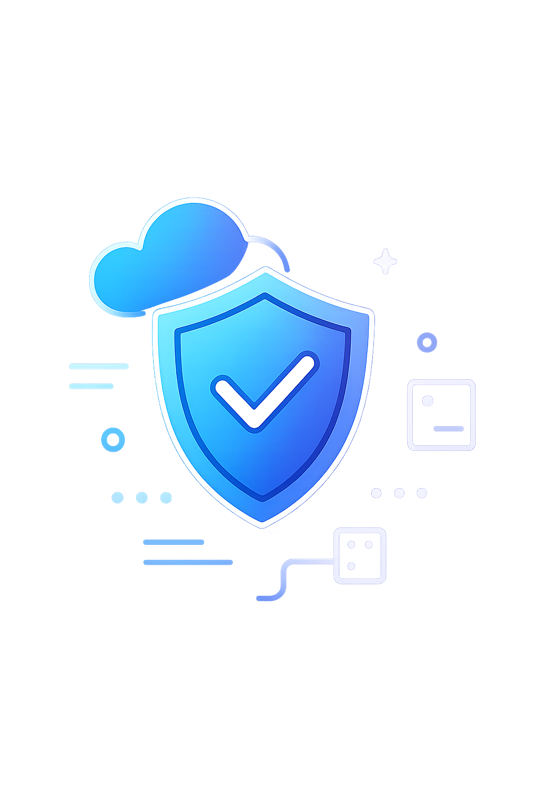

Bem-vindo à Área Restrita
Aqui estão os materiais exclusivos da Cara Core. Seu acesso foi autenticado e monitoramos cada sessão para manter tudo seguro.
Validando credenciais de acesso...

Conteúdo protegido
Utilize esta área para hospedar manuais, dashboards, relatórios e outros materiais reservados à equipe Cara Core ou clientes aprovados. Organize os links conforme a necessidade do projeto.
Que tal conhecer um pouco da nossa história?
Conheça a jornada da Área 51
Antes de a Área 51 se tornar o espaço seguro que você usa hoje, ela nasceu de uma inquietação muito humana: como oferecer confiança digital sem assustar quem só quer um serviço simples? Preparamos uma narrativa acolhedora, sem jargões, contando os bastidores dessa construção — dos primeiros rascunhos em guardanapos às madrugadas cuidando dos primeiros acessos.
Reserve cerca de dez minutos, pegue um café e mergulhe nessa história cheia de tropeços, vitórias e desafios que ainda nos movem. É uma leitura para todos, sem termos técnicos, feita para inspirar nossa equipe, parceiros e clientes.
Ler a história completa